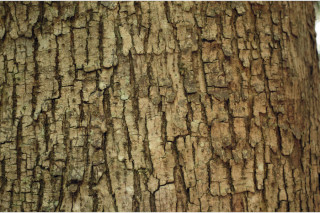

Images :



| Habit : | Deciduous trees up to 28 m tall. |
| Leaves : | Leaves compound , paripinnate , 23-90 cm long, clustered at twig ends; rachis terete , pulvinate , 60 cm or more, glabrous ; petiolule 0.7-2.0 cm long; leaflets 6-15 pairs, alternate , subopposite or opposite , 5-15 x 2-6 cm, lanceolate to narrow ovate , apex caudate - acuminate and slightly curved, base asymmetric , margin entire , sometime crenate when young, chartaceous to subcoriaceous , glabrous , shining above, pale beneath; midrib flat above; secondary_nerves 12-16 pairs; tertiary_nerves broadly reticulate . |
| Inflorescence / Flower : | Inflorescence terminal panicles , drooping ; flowers white. |
| Fruit and Seed : | Capsule , elliptic , 5-valved , to 2 cm long, with white patches; seeds many, papery winged . |